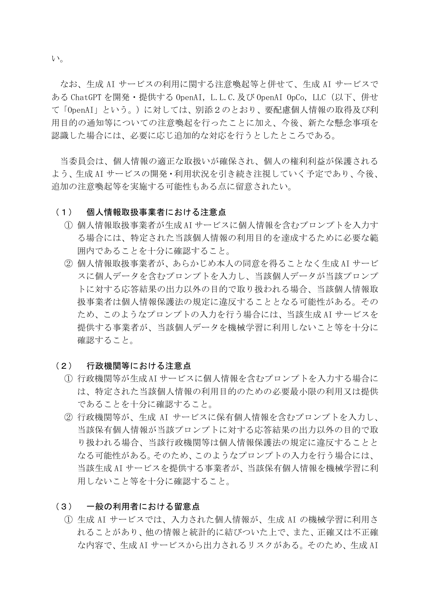

個人情報保護委員会は、入力前の確認を求めている

出典：個人情報保護委員会「生成AIサービスの利用に関する注意喚起等について」3ページ（2023年6月2日公表、2026年10月6日確認）。
人材紹介・派遣では、職務経歴、希望条件、面談記録など、本人を識別できる情報を日常的に扱います。個人情報保護委員会の注意喚起は、個人情報を含むプロンプトが利用目的の範囲内か、入力した個人データが応答以外の目的で扱われないかを確認するよう求めています。「法人向けプランだから安全」と一括りにせず、実際の契約と設定を確認する必要があります。
CA・RA業務を「入力」「生成」「判断」に分ける
候補者側を担当するCAと、求人企業側を担当するRAでは、扱う情報や判断が異なります。生成AIを入れる業務名だけを決めても、安全な範囲は分かりません。面談、求人ヒアリング、候補者推薦を、入力する情報、AIに作らせるもの、人が決めることへ分けます。
| 工程 | AIに渡すもの | AIの出力 | 人が決めること |
|---|---|---|---|
| 求人ヒアリング | 確認済みの職務・条件 | 要件の項目分け、質問案 | 採用基準、条件、掲載内容 |
| 候補者面談 | 利用条件を満たす面談記録 | 事実、希望、確認事項の整理 | 評価、推薦可否、次の質問 |
| 推薦 | 求人要件と確認済み経歴 | 対応根拠と推薦文の下書き | 本人確認、企業への送信 |
氏名や連絡先を消しても、勤務先、職種、時期、固有の実績の組み合わせから本人が分かる場合があります。マスキングだけに頼らず、そもそもそのサービスへ入力してよいかを判断します。
面談メモは、本人の発言と担当者の評価を分ける
面談記録は、次の担当者が本人の希望と担当者の判断を区別できる形で残します。録音を使う場合は、録音目的、処理するサービス、保存期間、共有範囲を候補者へ説明し、必要な同意を得ます。
TechWorkerの設計例：面談記録を「本人が述べた事実」「希望条件」「担当者の所見」「未確認」「次回の質問」に分けます。AIに不足情報を補わせず、未確認のまま残します。
AIの要約後は、会社名、役職、在籍期間、数値、希望年収、入社可能時期を原記録と照合します。「成長したい」といった言葉を、本人が述べていない転職理由へ広げないことも重要です。項目を分けた記録は、採用管理システム（ATS）や顧客管理システム（CRM）の既存項目に合わせ、誰がいつ確認したかを残します。
対外文面は、元データへ戻って確認する
求人票、スカウト、推薦コメント、面談後の連絡は、文章が自然なほど誤りを見落としやすくなります。外部へ送る前に、求人条件は求人事実台帳、候補者経歴は職務経歴書と面談記録へ戻って照合します。
AIの文章に「最適」「即戦力」「強く推薦」といった評価語が入っても、それ自体は根拠になりません。求人要件のどこに、候補者のどの経験が対応するかを書きます。候補者本人が企業へ伝えることを望んでいない情報は、推薦文へ移しません。
最初は、全件を人が確認できる一工程に限る
開始単位は「CA業務全体」では広すぎます。利用条件を確認した環境で、架空データによる求人要件整理、または承認済み面談メモの項目分けなど、一つの工程を選びます。担当者、入力可能な情報、確認項目、保存先、削除方法を先に決めます。
効果測定では、同じ件数について下書き時間と確認時間を分けて記録します。AIで下書きが短くなっても、誤りの確認に時間が増えれば総時間は減っていません。修正件数、重大な誤り、本人や求人企業からの訂正も記録し、継続範囲を決めます。
よくある質問
利用目的の範囲内か、サービス提供者が入力を機械学習など別目的に使うかを確認します。本人同意、契約、社内規程、保存先を確認できない状態では入力しません。氏名を消すだけで十分とは限りません。
録音する場合は目的、処理するサービス、保存期間、共有範囲を説明し、必要な同意を得ます。AIの要約は原記録と照合し、固有名詞、数値、希望条件、本人の発言を確認します。
利用条件を確認できるデータで、出力を人が全件確認できる一工程から始めます。たとえば架空データによる求人要件整理や、承認済みメモの項目分けです。時間短縮は同じ件数と確認基準で測ります。